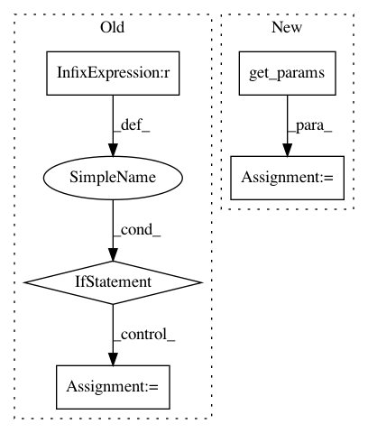

85af5f6c2e79f1196377cdc41078e50ee7009193,Tars/distributions/divergences.py,KullbackLeibler,estimate,#KullbackLeibler#Any#,15
Before Change
scale1 = self.q1.scale
inputs = get_dict_values(x, self.q2.cond_var)
if len(inputs) > 0:
loc2, scale2 = self.q2.forward(*inputs)
else:
loc2 = self.q2.loc
scale2 = self.q2.scale
return gauss_gauss_kl(loc1, scale1, loc2, scale2)
raise Exception("You cannot use these distributions, "
"got %s and %s." % (self.q1_name,
After Change
params1 = self.p1.get_params(**inputs)
inputs = get_dict_values(x, self.p2.cond_var, True)
params2 = self.p2.get_params(**inputs)
return gauss_gauss_kl(params1["loc"], params1["scale"],
params2["loc"], params2["scale"])
In pattern: SUPERPATTERN
Frequency: 3
Non-data size: 5
Instances
Project Name: masa-su/pixyz
Commit Name: 85af5f6c2e79f1196377cdc41078e50ee7009193
Time: 2018-07-10
Author: masa@weblab.t.u-tokyo.ac.jp
File Name: Tars/distributions/divergences.py
Class Name: KullbackLeibler
Method Name: estimate
Project Name: MLWave/kepler-mapper
Commit Name: cecabac2e1455ea9964155c5e231f74482c5f48d
Time: 2017-06-30
Author: hendrikvanveen@Hendriks-MacBook-Pro.local
File Name: km.py
Class Name: KeplerMapper
Method Name: fit_transform
Project Name: Theano/Theano
Commit Name: b2ae1db6499f1121f4edef618d6acb141b653d28
Time: 2016-11-08
Author: stevenbocco@gmail.com
File Name: theano/tensor/opt_uncanonicalize.py
Class Name:
Method Name: local_max_and_argmax